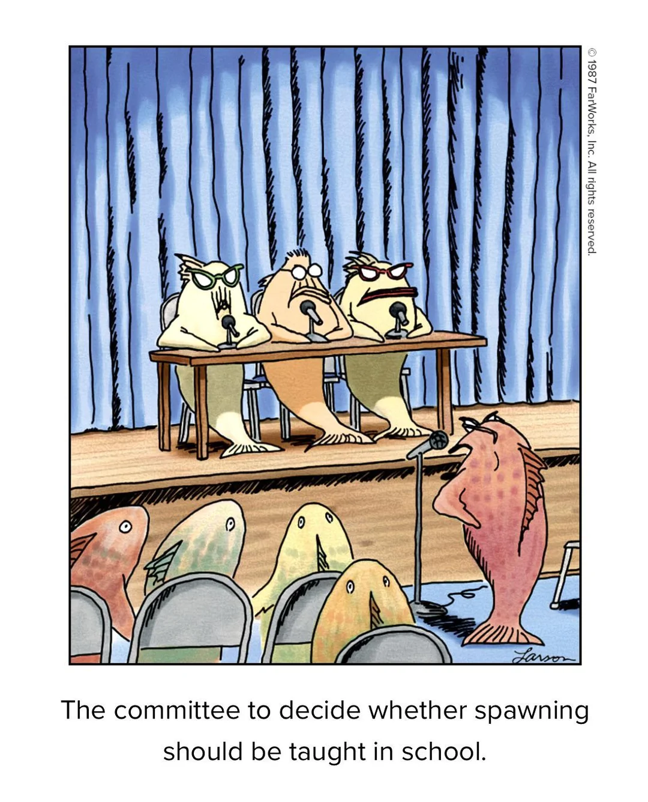
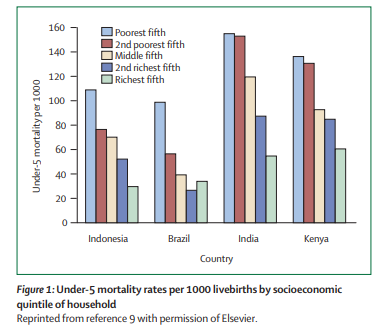

Social determinants of health inequalities
Michael Marmot
June 12, 2024
For EPPS 6300: EPPS Policy Lab
Paper wants to justify creation of a committee
“WHO is launching a Commission on Social Determinants of Health, which will:
- review the evidence,
- raise societal debate, and
- recommend policies with the goal of improving health of the world’s most vulnerable people.”
But even fish don’t like committees!
The problem: Health inequities across social dimensions
Correlation isn’t causation
Within rich countries, with strikingly different material conditions from Bangladesh, there is a social gradient in mortality prompting consideration of the causal links between status and health.
Why create a Commission on Social Determinants of Health?
Identify causal factors
What about poverty causes bad health outcomes? What exactly is the causal mechanism?
If it is just “material deprivation”, then how to explain the 20-year gap in life expectancy of Australian Aboriginal and Torres Strait Islander peoples and the Australian average?

Identify causal factors
What about poverty causes bad health outcomes? What exactly is the causal mechanism?
How to delink poverty from health outcomes, in addition to alleviating poverty in its own right?
Social determinants of health inequalities
Michael Marmot
As presented by, Venkatesh “Venki” Subramanian THANK YOU!